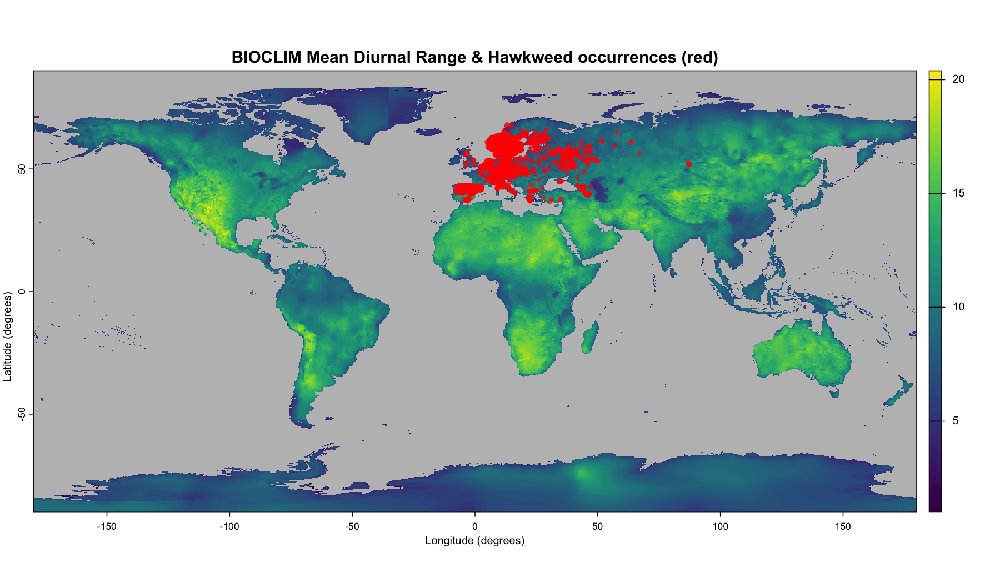
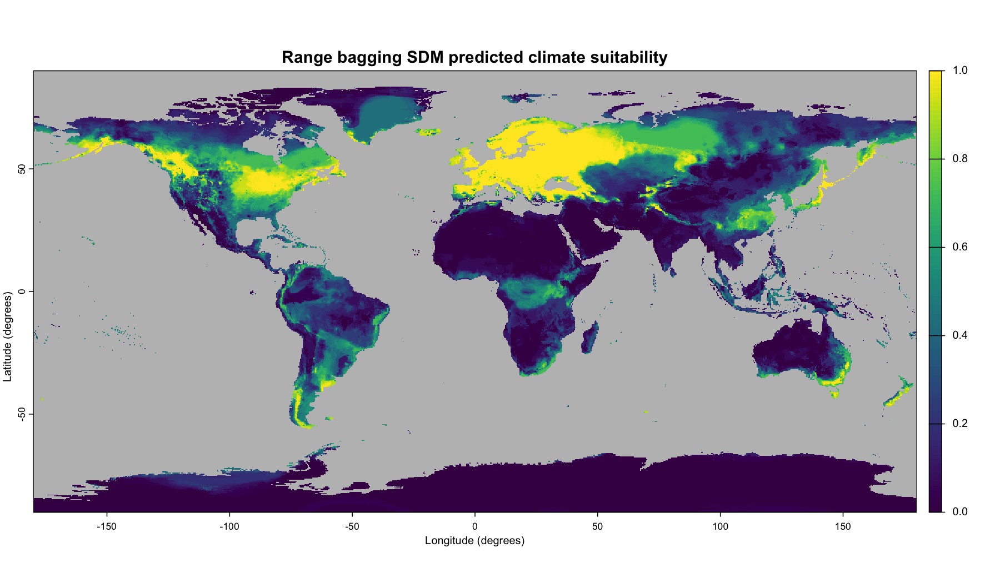
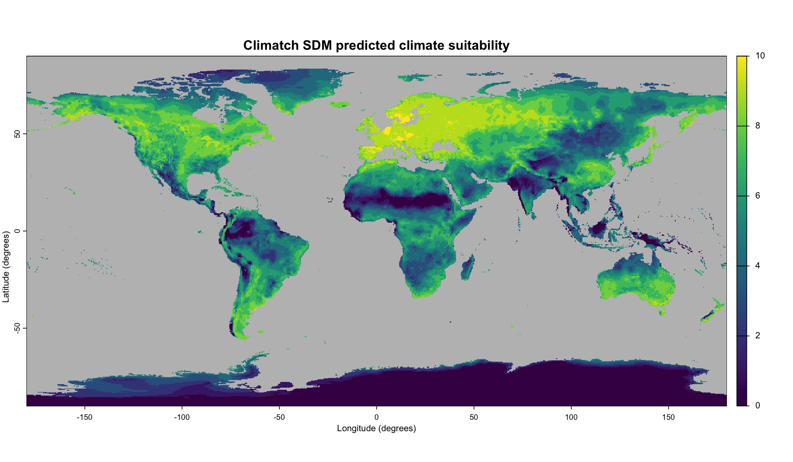
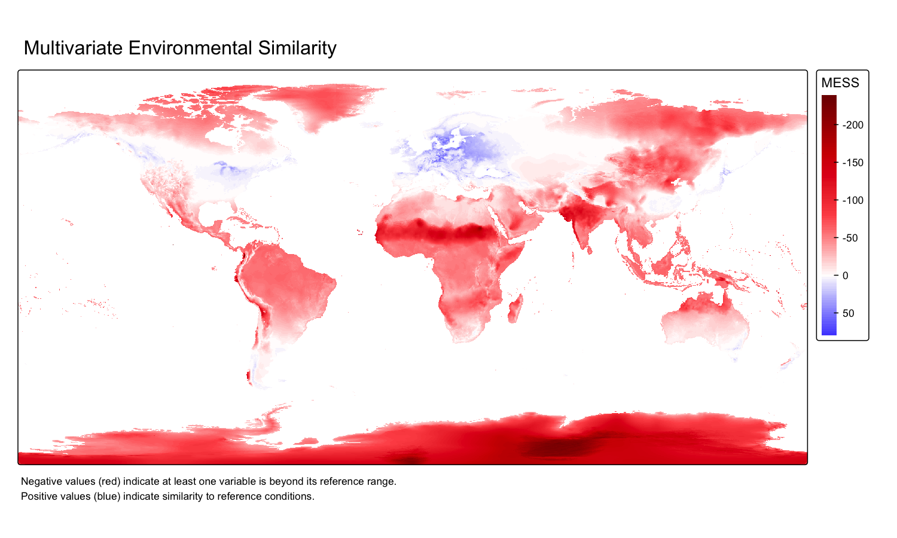
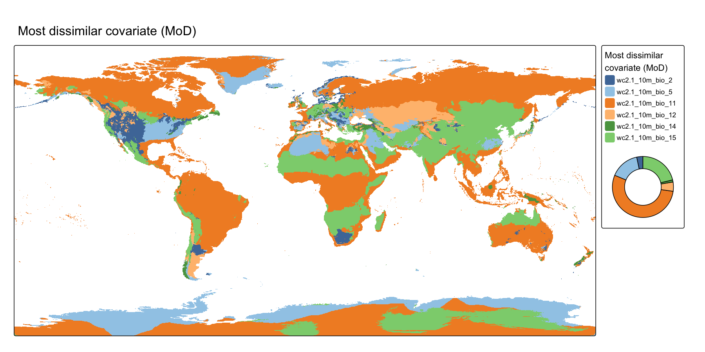
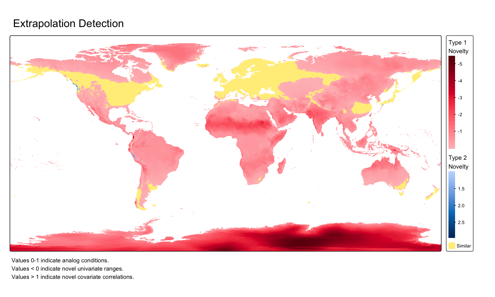
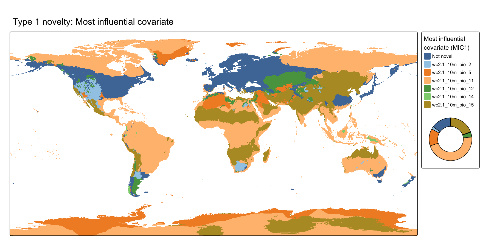
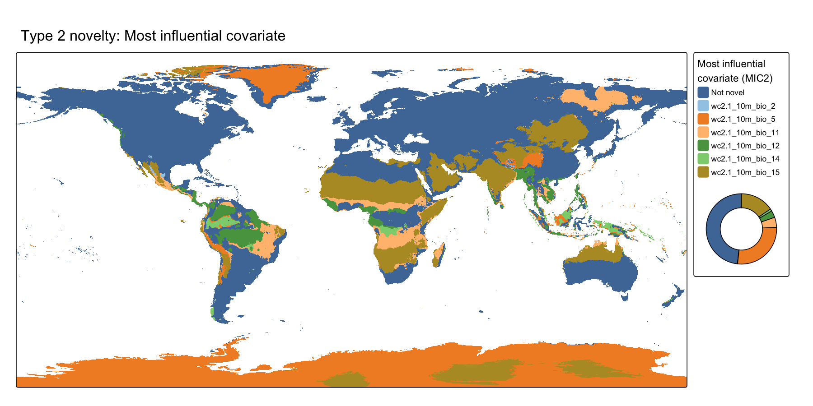

The bssdm package provides Species Distribution Modelling (SDM) implementations for two presence-only methods for predicting the spatial distribution environmental suitability for exotic pests, diseases, and other biosecurity threats, utilising spatial species occurrence records and their corresponding environmental variables. The two SDM methods are:
- Range bagging (Drake, 2015)
- Climatch (ABARES, 2020)
The package also provides two tools for assessing environmental novelty in the projection area relative to the species occurrence locations used to build a model:
- MESS — Multivariate Environmental Similarity Surface (Elith et al., 2010)
- ExDet — Extrapolation Detection (Mesgaran et al., 2014)
Installation
You can install the latest version of bssdm from GitHub with:
remotes::install_github("cebra-analytics/bssdm")Example
The following example generates the environmental suitability for a Hawkweed species (Hieracium pilosella), an exotic weed for Australia, using both the bssdm package Range bagging and Climatch method implementations.
Step 1: Obtain environmental variables
The SDM requires spatial environmental data in the form of GeoTIFF raster layers for the area of interest, encapsulating the species occurrence records (to build the model), as well as locations where the predicted environmental suitability is desired. Here we will use a selection of global climate data from WorldClim (Fick & Hijmans, 2017; http://www.worldclim.org).
While not required to use the bssdm package, we use the geodata package here to download global climate data for the example. The geodata package can be installed with:
install.packages("geodata")The climate data can then be downloaded with:
climate_rast_all <- geodata::worldclim_global(
var = "bio", res = 10, path = tempdir()
)
# Climate WorldClim (BIOCLIM) data
# BIO02: Mean Diurnal Range
# BIO05; Max Temperature of Warmest Month
# BIO11: Mean Temperature of Coldest Quarter
# BIO12: Annual Precipitation
# BIO14: Precipitation of Driest Month
# BIO15: Precipitation Seasonality (Coefficient of Variation)
climate_rast <- climate_rast_all[[c(2,5,11,12,14,15)]]
climate_rast
#> class : SpatRaster
#> size : 1080, 2160, 6 (nrow, ncol, nlyr)
#> resolution : 0.1666667, 0.1666667 (x, y)
#> extent : -180, 180, -90, 90 (xmin, xmax, ymin, ymax)
#> coord. ref. : lon/lat WGS 84 (EPSG:4326)
#> sources : wc2.1_10m_bio_2.tif
#> wc2.1_10m_bio_5.tif
#> wc2.1_10m_bio_11.tif
#> ... and 3 more sources
#> names : wc2.1~bio_2, wc2.1~bio_5, wc2.1~io_11, wc2.1~io_12, wc2.1~io_14, wc2.1~io_15
#> min values : 1.00000, -29.68600, -66.31125, 0, 0, 0.0000
#> max values : 21.14754, 48.08275, 29.15299, 11191, 484, 229.0017Step 2: Obtain species occurrence records
The SDM requires species occurrence records to be specified in a table with latitude and longitude coordinates using the WGS84 coordinate reference system (CRS). Here we will use global Hawkweed (Hieracium pilosella) occurrences downloaded from Global Biodiversity Information Facility (GBIF, 2026) and cleaned with CoordinateCleaner (Zizka et al., 2019) to remove duplicates and incomplete or incorrect records.
library(bssdm)
# Cleaned Hawkweed (Hieracium pilosella) occurrences (see ?hawkweed for details)
head(hawkweed)
#> lon lat verified
#> 1 7.999168 44.85531 1
#> 2 14.782217 50.90555 1
#> 3 12.676944 50.66167 1
#> 4 12.431944 50.68472 1
#> 5 12.483333 50.70000 1
#> 6 12.506383 50.73638 1
# Plot BIOCLIM BIO02 & occurrences
terra::plot(climate_rast[[1]], colNA = "grey",
main = "BIOCLIM Mean Diurnal Range & Hawkweed occurrences (red)",
xlab = "Longitude (degrees)", ylab = "Latitude (degrees)")
terra::plot(terra::vect(hawkweed, crs = "EPSG:4326"),
col = "red", pch = 20, alpha = 0.5, add = TRUE)
Step 3: Run the SDM
To run a SDM we first build a model, then use it to predict the suitability for the area of interest using climate data with matching variables. Although this climate data may differ in its extent, CRS, resolution, or time frame (e.g. past or future climate), here we reuse the climate data used to build the model. We will build models and predict suitability for both our Range bagging and Climatch SDM methods.
Range bagging SDM
# Run Range bagging SDM
rangebag_model <- bssdm::rangebag(
climate_rast, hawkweed, parallel_cores = 1
)
rangebag_output <- predict(rangebag_model, climate_rast, raw_output = FALSE)
# Plot the Range bagging SDM predicted climate suitability
terra::plot(rangebag_output, colNA = "grey",
main = "Range bagging SDM predicted climate suitability",
xlab = "Longitude (degrees)", ylab = "Latitude (degrees)")
Climatch SDM
# Run Climatch SDM
climatch_model <- bssdm::climatch(
climate_rast, hawkweed, parallel_cores = 1
)
climatch_output <- predict(climatch_model, climate_rast, raw_output = FALSE)
# Plot the Climatch SDM predicted climate suitability
terra::plot(climatch_output, colNA = "grey",
main = "Climatch SDM predicted climate suitability",
xlab = "Longitude (degrees)", ylab = "Latitude (degrees)")
Step 4: Assess environmental novelty
Correlative SDMs identify statistical relationships between occurrence patterns and spatial environmental data to estimate the suitability of a location given its environment. Such models are powerful in that relationships estimated from one region (e.g., a species’ native range) can be used to infer suitability in another region of interest. However, the projection region may have environmental conditions not represented in the model-fitting data — either because a variable is outside its model-fitting range, or because multiple variables combine to produce novel conditions — leading to model extrapolation.
Model extrapolation can reduce prediction reliability, so it is important to understand the spatial distribution of novel environmental conditions so that model outputs can be interpreted appropriately. bssdm provides two tools for this purpose: ExDet (Mesgaran et al., 2014) and MESS (Elith et al., 2010).
Both functions require a reference dataset: the climate values extracted at the species occurrence locations used to build the model.
# Extract climate values at occurrence locations (reference data for novelty assessment)
ref_data <- terra::extract(climate_rast,
terra::vect(hawkweed, crs = "EPSG:4326"),
ID = FALSE)MESS
The Multivariate Environmental Similarity Surface (MESS; Elith et al., 2010) quantifies how similar each location’s environmental conditions are to the reference (occurrence) data. Positive values indicate conditions within the reference range; negative values indicate novel (dissimilar) conditions. The mess() function also returns the most dissimilar variable (MoD) and most similar variable (MoS) for each location.
# Calculate MESS
mess_output <- bssdm::mess(climate_rast, ref_data, full = TRUE)
plot(mess_output)
plot(mess_output, which = "mod")
ExDet
The Extrapolation Detection tool (ExDet; Mesgaran et al., 2014) distinguishes between two types of environmental novelty. Type 1 (univariate) novelty occurs when one or more variables fall outside their reference range; Type 2 (multivariate) novelty occurs when the combination of variables is unusual even if individual variables are within range. The exdet() function returns a score where values less than 0 indicate Type 1 novelty, values between 0 and 1 indicate analog conditions, and values greater than 1 indicate Type 2 novelty.
# Calculate ExDet with most influential covariates
exdet_output <- bssdm::exdet(climate_rast, ref_data, mic = TRUE)
plot(exdet_output)
plot(exdet_output, which = "mic1")
plot(exdet_output, which = "mic2")
References
ABARES (2020). ‘Climatch v2.0 User Manual’. Canberra. https://climatch.cp1.agriculture.gov.au/ Accessed: November 2021.
Drake, J. M. (2015). ‘Range bagging: a new method for ecological niche modelling from presence-only data’. Journal of the Royal Society Interface, 12(107), 20150086. doi:10.1098/rsif.2015.0086
Elith, J., Kearney, M., and Phillips, S. (2010). ‘The art of modelling range-shifting species’. Methods in Ecology and Evolution, 1, 330–342. doi:10.1111/j.2041-210X.2010.00036.x
Fick, S. E., Hijmans, R. J. (2017). ‘WorldClim 2: new 1-km spatial resolution climate surfaces for global land areas’. International Journal of Climatology, 37, 4302–4315. doi:10.1002/joc.5086
GBIF.org (04 May 2026) ‘GBIF Occurrence Download’. doi:10.15468/dl.q6q6fk
Mesgaran, M. B., Cousens, R. D., and Webber, B. L. (2014). ‘Here be dragons: a tool for quantifying novelty due to covariate range and correlation change when projecting species distribution models’. Diversity and Distributions, 20(10), 1147–1159. doi:10.1111/ddi.12209
Zizka, A., Silvestro, D., Andermann, T., Azevedo, J., Duarte Ritter, C., Edler, D., Farooq, H., Herdean, A., Ariza, M., Scharn, R., Svanteson, S., Wengstrom, N., Zizka, V., & Antonelli, A. (2019). ‘CoordinateCleaner: standardized cleaning of occurrence records from biological collection databases.’ Methods in Ecology and Evolution, 7. doi:10.1111/2041-210X.13152, R package version 3.0.1, https://github.com/ropensci/CoordinateCleaner.